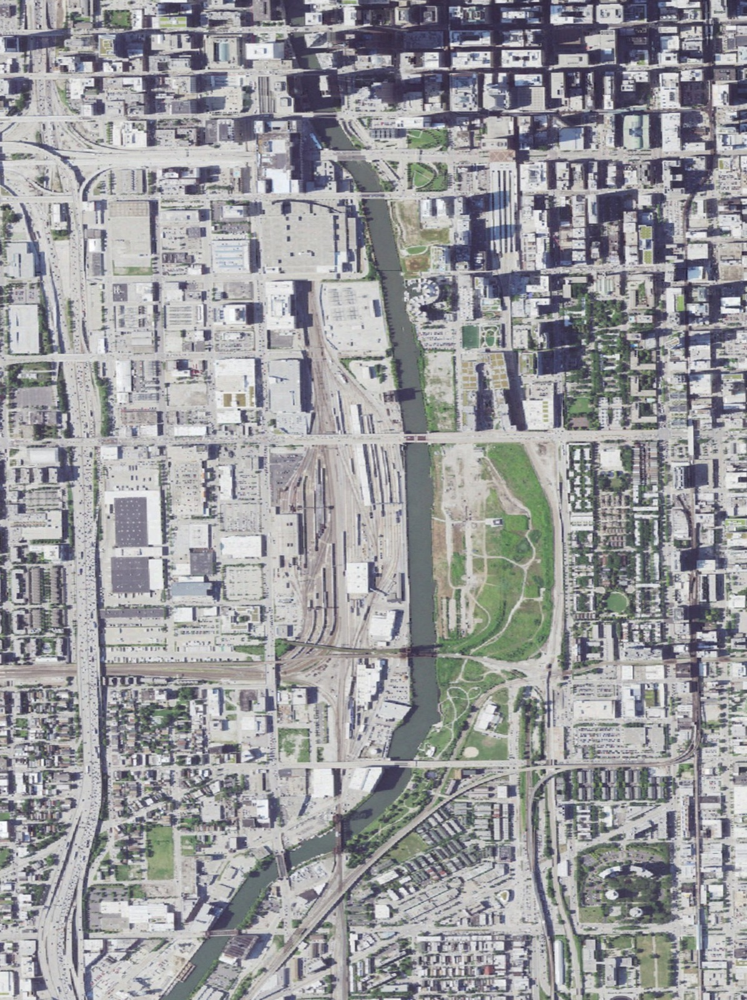
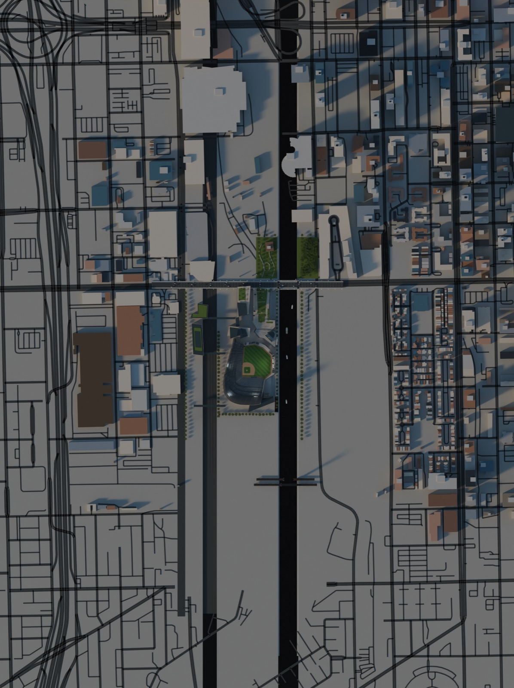
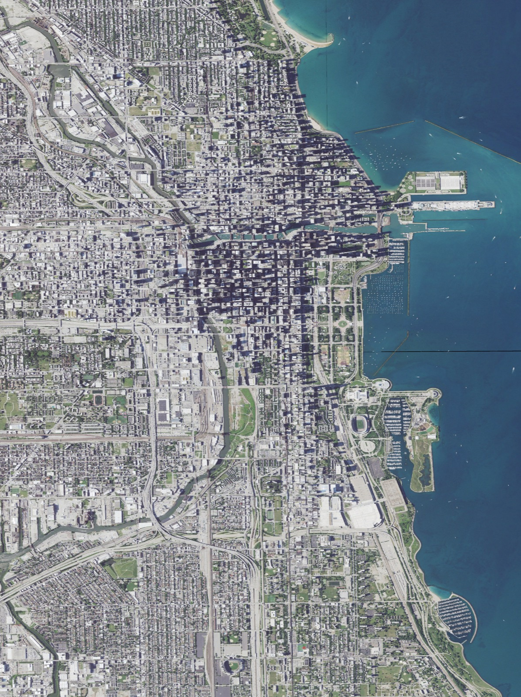
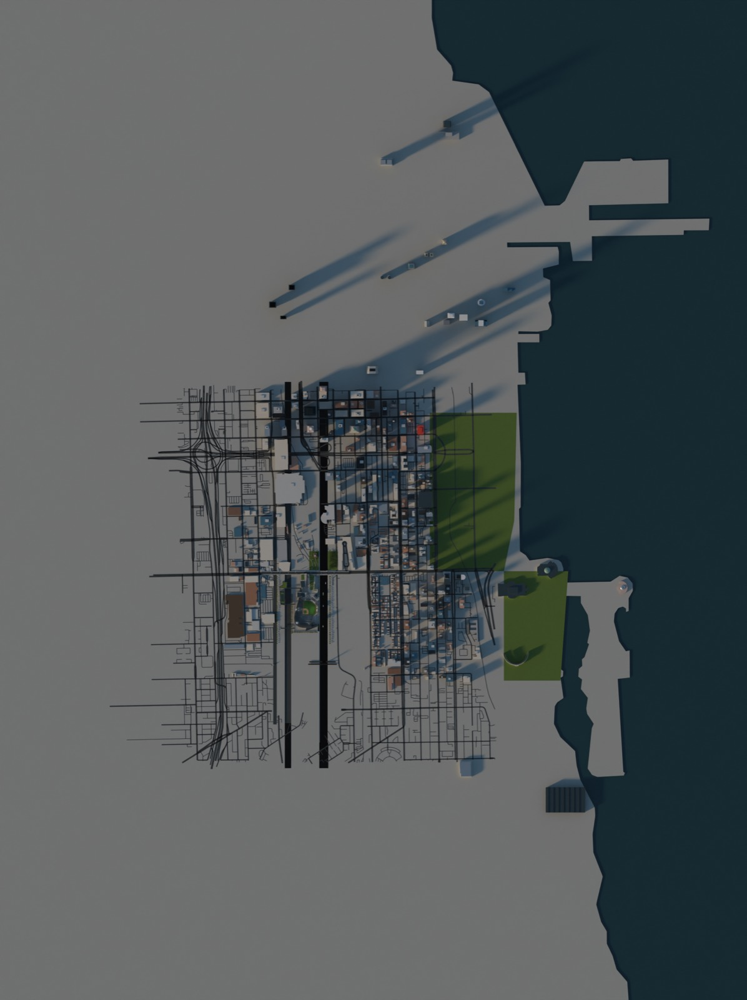

The site is the working rail yard south of Roosevelt Road between Canal Street and the South Branch, with the empty "78" parcel across the river. Public-domain USGS aerial imagery (refreshed June 2024) against the model from directly above, same box, north up.
AECOM's three views are the only oblique pictures of the proposal, and there is no free oblique imagery of the yard from those exact angles, so this page compares from above. Drag the handle: today on the left, the model on the right.




The model uses OpenStreetMap footprints for existing buildings and the USGS shoreline for the lake, so streets, blocks and the river line up with the photograph to within a few metres. Everything on the yard itself is the proposal: the bowl, park, bridges, the medical building and the soccer stadium across the river are AECOM's concept as traced, not anything that exists.